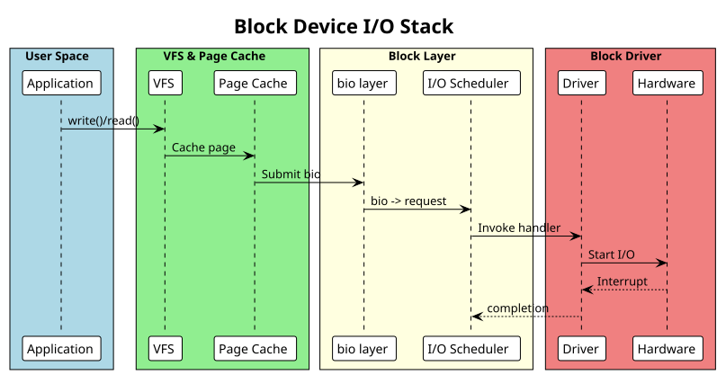

Block Drivers
Table of Contents
Block device drivers: request queue, I/O scheduling, bio layer. Includes ramdisk example.
1. Block Device Fundamentals
Block devices provide fixed-size sector access (typically 512 bytes or 4K). Examples: disk drives, USB storage, loop devices, ramdisk.
Block I/O stack:
- VFS layer → Block I/O layer (bio handling) → I/O scheduler → Block driver → Hardware
2. Device Registration
#include <linux/blkdev.h>
#include <linux/genhd.h>
struct my_blk_dev {
sector_t capacity; // in sectors
struct gendisk *disk;
struct request_queue *queue;
spinlock_t lock;
u8 *data; // storage buffer (ramdisk)
};
static int my_probe(struct platform_device *pdev)
{
struct my_blk_dev *dev;
int ret;
dev = devm_kzalloc(&pdev->dev, sizeof(*dev), GFP_KERNEL);
if (!dev)
return -ENOMEM;
// Allocate storage (ramdisk example: 10MB)
dev->capacity = 10 * 1024 * 1024 / 512; // sectors
dev->data = devm_kmalloc(&pdev->dev, dev->capacity * 512, GFP_KERNEL);
if (!dev->data)
return -ENOMEM;
spin_lock_init(&dev->lock);
// Allocate request queue
dev->queue = blk_alloc_queue(GFP_KERNEL);
if (!dev->queue)
return -ENOMEM;
// Set I/O request handler
blk_queue_make_request(dev->queue, my_make_request);
// Allocate and initialize gendisk
dev->disk = alloc_disk(1); // 1 partition
if (!dev->disk) {
blk_cleanup_queue(dev->queue);
return -ENOMEM;
}
dev->disk->major = MY_MAJOR;
dev->disk->first_minor = 0;
dev->disk->fops = &my_blk_fops;
dev->disk->private_data = dev;
dev->disk->queue = dev->queue;
snprintf(dev->disk->disk_name, 32, "myblk");
set_capacity(dev->disk, dev->capacity);
add_disk(dev->disk);
platform_set_drvdata(pdev, dev);
pr_info("Block device registered: /dev/myblk\n");
return 0;
}
static int my_remove(struct platform_device *pdev)
{
struct my_blk_dev *dev = platform_get_drvdata(pdev);
del_gendisk(dev->disk);
put_disk(dev->disk);
blk_cleanup_queue(dev->queue);
return 0;
}
3. Make Request Handler
The make_request() callback processes bio (block I/O) structures:
static blk_qc_t my_make_request(struct request_queue *q, struct bio *bio)
{
struct my_blk_dev *dev = bio->bi_disk->private_data;
struct bio_vec bvec;
struct bvec_iter iter;
sector_t sector = bio->bi_iter.bi_sector;
// Validate sector range
if ((sector + bio_sectors(bio)) > dev->capacity) {
bio_io_error(bio);
return BLK_QC_T_NONE;
}
// Process each page in the bio
bio_for_each_segment(bvec, bio, iter) {
unsigned long offset = sector * 512;
if (bio_data_dir(bio) == READ) {
// Read from storage
memcpy(page_address(bvec.bv_page) + bvec.bv_offset,
dev->data + offset, bvec.bv_len);
} else {
// Write to storage
memcpy(dev->data + offset,
page_address(bvec.bv_page) + bvec.bv_offset,
bvec.bv_len);
}
sector += bvec.bv_len / 512;
}
// Signal completion
bio_endio(bio);
return BLK_QC_T_NONE;
}
4. Request Queue Handler (Alternative)
For drivers using request queues instead of direct bio handling:
static void my_request_fn(struct request_queue *q)
{
struct request *req;
while ((req = blk_fetch_request(q)) != NULL) {
struct my_blk_dev *dev = req->rq_disk->private_data;
if (req->cmd_type != REQ_TYPE_FS) {
__blk_end_request_all(req, -EIO);
continue;
}
sector_t sector = blk_rq_pos(req);
unsigned int nsects = blk_rq_sectors(req);
// Validate
if ((sector + nsects) > dev->capacity) {
__blk_end_request_all(req, -EIO);
continue;
}
// Process request
rq_for_each_segment(bvec, req, iter) {
unsigned long offset = sector * 512;
void *from, *to;
if (rq_data_dir(req) == READ) {
from = dev->data + offset;
to = page_address(bvec.bv_page) + bvec.bv_offset;
} else {
from = page_address(bvec.bv_page) + bvec.bv_offset;
to = dev->data + offset;
}
memcpy(to, from, bvec.bv_len);
sector += bvec.bv_len / 512;
}
__blk_end_request_all(req, 0);
}
}
5. Block Device File Operations
static int my_open(struct block_device *bdev, fmode_t mode)
{
return 0;
}
static void my_release(struct gendisk *disk, fmode_t mode)
{
}
static int my_ioctl(struct block_device *bdev, fmode_t mode, unsigned int cmd, unsigned long arg)
{
return -ENOTTY;
}
static const struct block_device_operations my_blk_fops = {
.owner = THIS_MODULE,
.open = my_open,
.release = my_release,
.ioctl = my_ioctl,
};
6. Example: Ramdisk Driver
Minimal in-memory block device:
// ramdisk.c
#include <linux/module.h>
#include <linux/platform_device.h>
#include <linux/blkdev.h>
#include <linux/genhd.h>
#define RAMDISK_SIZE (10 * 1024 * 1024) // 10MB
#define SECTOR_SIZE 512
struct ramdisk_dev {
struct gendisk *disk;
struct request_queue *queue;
u8 *data;
sector_t capacity;
};
static blk_qc_t ramdisk_make_request(struct request_queue *q, struct bio *bio)
{
struct ramdisk_dev *dev = bio->bi_disk->private_data;
struct bio_vec bvec;
struct bvec_iter iter;
sector_t sector = bio->bi_iter.bi_sector;
if ((sector + bio_sectors(bio)) > dev->capacity) {
bio_io_error(bio);
return BLK_QC_T_NONE;
}
bio_for_each_segment(bvec, bio, iter) {
unsigned long offset = sector * SECTOR_SIZE;
if (bio_data_dir(bio) == READ) {
memcpy(page_address(bvec.bv_page) + bvec.bv_offset,
dev->data + offset, bvec.bv_len);
} else {
memcpy(dev->data + offset,
page_address(bvec.bv_page) + bvec.bv_offset,
bvec.bv_len);
}
sector += bvec.bv_len / SECTOR_SIZE;
}
bio_endio(bio);
return BLK_QC_T_NONE;
}
static const struct block_device_operations ramdisk_fops = {
.owner = THIS_MODULE,
};
static int ramdisk_probe(struct platform_device *pdev)
{
struct ramdisk_dev *dev;
dev = devm_kzalloc(&pdev->dev, sizeof(*dev), GFP_KERNEL);
if (!dev)
return -ENOMEM;
dev->capacity = RAMDISK_SIZE / SECTOR_SIZE;
dev->data = devm_kmalloc(&pdev->dev, RAMDISK_SIZE, GFP_KERNEL);
if (!dev->data)
return -ENOMEM;
dev->queue = blk_alloc_queue(GFP_KERNEL);
blk_queue_make_request(dev->queue, ramdisk_make_request);
dev->disk = alloc_disk(1);
dev->disk->major = 240; // Use reserved major
dev->disk->first_minor = 0;
dev->disk->fops = &ramdisk_fops;
dev->disk->private_data = dev;
dev->disk->queue = dev->queue;
snprintf(dev->disk->disk_name, 32, "ramdisk");
set_capacity(dev->disk, dev->capacity);
add_disk(dev->disk);
platform_set_drvdata(pdev, dev);
pr_info("Ramdisk device registered\n");
return 0;
}
static int ramdisk_remove(struct platform_device *pdev)
{
struct ramdisk_dev *dev = platform_get_drvdata(pdev);
del_gendisk(dev->disk);
put_disk(dev->disk);
blk_cleanup_queue(dev->queue);
return 0;
}
static struct platform_driver ramdisk_driver = {
.driver = { .name = "ramdisk" },
.probe = ramdisk_probe,
.remove = ramdisk_remove,
};
module_platform_driver(ramdisk_driver);
MODULE_LICENSE("GPL");
MODULE_AUTHOR("Your Name");
MODULE_DESCRIPTION("Ramdisk block device driver");
7. Queue Configuration
Common queue setup:
// Set sector size
blk_queue_logical_block_size(queue, 4096);
// Set maximum I/O size
blk_queue_max_hw_sectors(queue, 256);
// Set DMA alignment
blk_queue_dma_alignment(queue, 511);
// Disable I/O scheduler (for SSD-like devices)
queue->elevator = NULL;
8. User Interaction
# List block devices
lsblk
# Read from ramdisk
dd if=/dev/ramdisk bs=512 count=1
# Write to ramdisk
dd if=/bin/sh of=/dev/ramdisk bs=512 count=1
# Check device info
blockdev --getsize64 /dev/ramdisk
# Monitor I/O
iostat -x 1 /dev/ramdisk
9. Block I/O Stack Diagram
